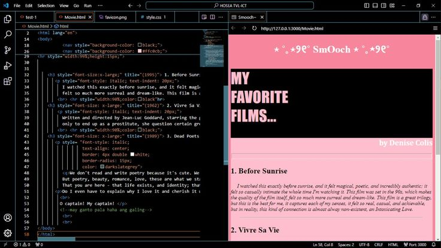
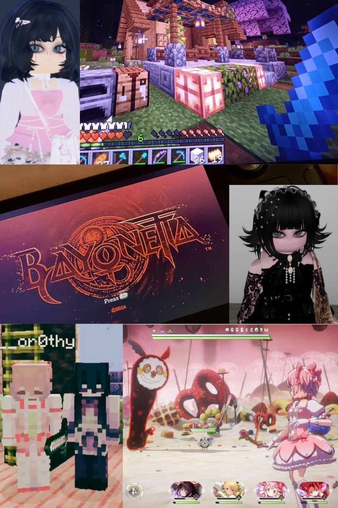
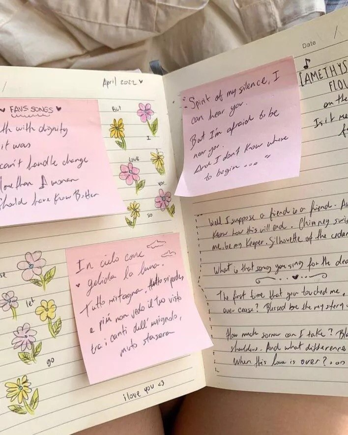
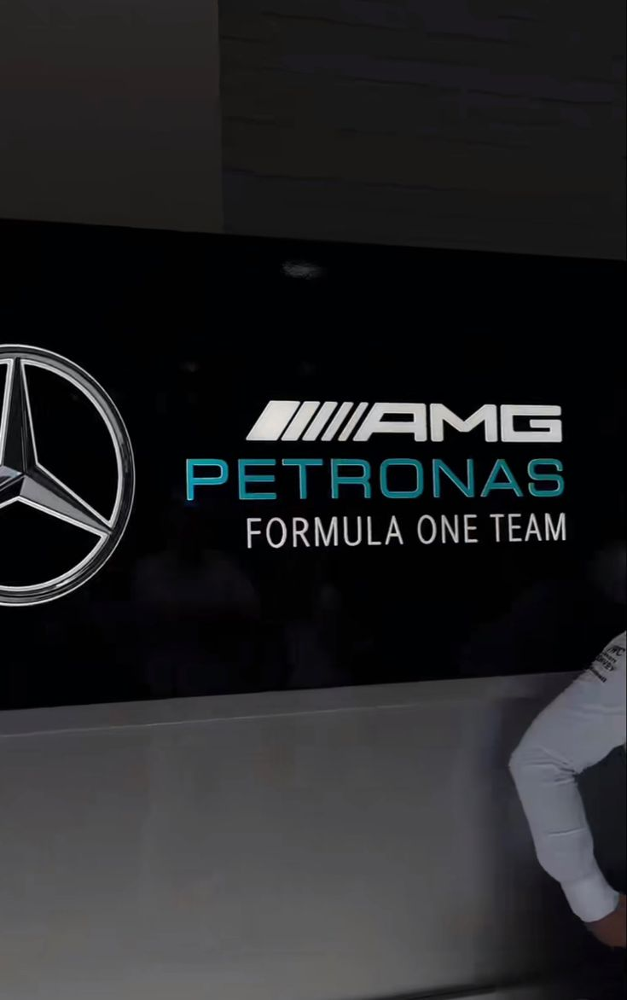

WAN ELAINA FARAH BINTI WAN SHAZRIL HAFIZ
Welcome to my personal digital profile! I am very glad you stopped by to learn a little more about me. Here, I share my journey as a student, a look into who i am, my interest, the ideas i am passionate about and where i am heading.
✦ VISION BOARD GALLERY





⊹ BIODATA ⊹
Name: WAN ELAINA FARAH BINTI WAN SHAZRIL HAFIZ
Matric Number: A25DW0262
Program: DSPD - DIPLOMA OF COMPUTER SCIENCE
Section: 39
⊹ ACADEMIC BACKGROUND ⊹
I am currently pursuing a Diploma in Computer Science (DSPD) at Universiti Teknologi Malaysia. My academic journey started in Puncak Alam, Selangor, where I completed my early education at SK Puncak Alam 3 and SMK Puncak Alam under the STEM B stream. I've always been drawn toward structured thinking and problem-solving, especially in subjects that involve logic, systems, and analysis
In my SPM, I achieved 1A+, 3As, 2A-, 1B+, 1C, 1D, with stronger performance in English, Computer Science, Mathematics, History, and Physics. Beyond academics, I've participated in essay writing, Scrabble, coding competitions, and various school programs, focusing more on experience-building than competition ranking.
- Certifications: FreeCodeCamp (Data Analysis with Python), Cisco NetAcad (In progress), STEM/ICT workshops.
- Current projects: Notion-style productivity system (main), Neocities website.
- Future projects: Power BI dashboard, skincare dataset analysis, regression model for prediction.
⊹ INTERESTS & HOBBIES ⊹
Things I enjoy outside studying and coding.
I spend most of my free time on story-driven media, music, and exploring creative ideas. I'm drawn to things with strong atmosphere, emotional depth, or interesting worldbuilding, and I tend to go deeper into topics when something catches my attention.
- 📖 Books:
- The Poppy War — R. F. Kuang
- Project Hail Mary — Andy Weir
- Earthlings — Sayaka Murata
- Enjoys: Psychological themes, sci-fi, and strong worldbuilding
- 🎮 Games:
- Umineko, Yume Nikki, Franbow, Silent Hill (Psychological horror / indie narrative games)
- Minecraft, GTA, Bayonetta (Casual play)
- Likes: Atmosphere, story, and unusual worlds
- 🎵 Music:
- Listens based on mood
- Genres: Indie / alternative, K-pop, J-pop, pop
- Artists: The Sundays, The Cardigans, BTS, Tame Impala, Perfume, Charli XCX
- 🌐 Other Interests:
- Exploring fictional worlds & lore
- Reading and casual analysis of media
- Random deep-dives into topics of interest
⊹ WORK STYLE ⊹
I work in a slow and intentional way, especially when I’m dealing with something new. I prefer understanding how things work first before trying to move fast.
- I focus on understanding systems properly before building or using them.
- I learn best through hands-on exploration and trial-and-error.
- I prefer solving problems step by step rather than rushing results.
- I tend to work better alone or in quiet, focused environments
- I care more about doing things correctly than doing them quickly
⊹ TECHNICAL BACKGROUND ⊹
I have experience working in basic programming tools languages through coursework and self-learning. Most of my learning so far has been practical, through building small projects and exploring concepts while studying.
- Tools used: VS Code, XAMPP, WAMP
- Currently learning: Syllybus: Databases and Web Programming / Private: Basic data science concepts
- Online Personal Learning: FreeCodeCamp (Data Analysis with Python), Cisco NetAcad (Introduction to Data Science - in progress)
⊹ FUTURE GOALS ⊹
I'm aiming to work in data-related fields in the future, especially roles that involve handling and organizing real-world data. I'm still exploring my exact path, but I'm mainly interested in building systems and working with data at a larger scale.
- Primary goal:Data Engineering
- Candidate interests: Software Engineering & Cybersecurity
- Interested industries: healthcare tech, biotechnology, supply chain systems, oil and gas along with aviation
- Long-term interest: Working with large-scale data system
- Focus: Building systems that make data easier to organize, understand, and use
⊹ PERSONAL PHILOSOPHY ⊹
"Science is organized knowledge; wisdom is organized life, and human intellect must learn to build its own structure from the fragmented data of a world that is constantly losing its memory."
- Immanuel Kant